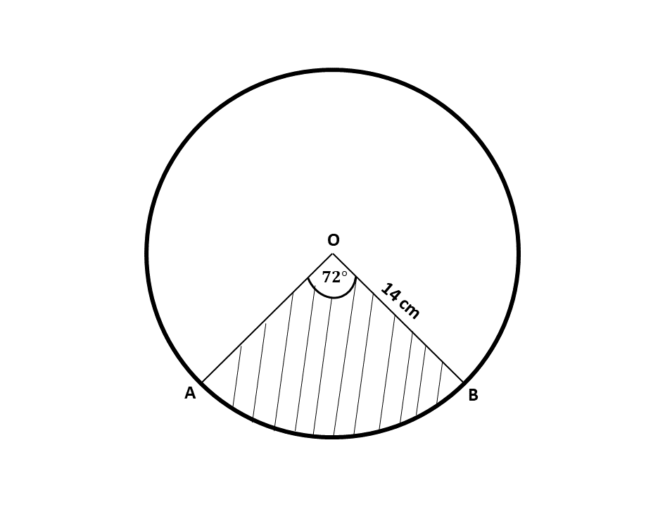

GUIDE (BECE - 1995)
Try to solve each question within 15 minutes. Time yourself and see how well you can do. After you are done solving the section B, try the timed section A, multiple choice questions at the bottom of the page.
Good luck and remember to check your answers with the solutions provided. If you have any questions, feel free to ask your teacher or refer to the video lessons for more help.
Section B
Question 1
-
There are 20 students in a hostel, 16 of them are fluent in French and 10 of them are fluent in English. Each student is fluent in at least one of the languages.
\((i)\) Illustrate the information on a Venn diagram.
\((ii)\) How many students are fluent in both English and French?
-
The sum of ages of two brothers Kofi and Kweku is 35. Kofi's age is two-thirds Kweku's age. Find their ages.
Question \(1a (i)\)
let \(\mathbf{U} =\) students in the hostel
let \(F =\) students fluent in French
let \(E =\) students fluent in English
\(n(U) = 20\)
\(n(F) = 16\)
\(n(E) = 10\)
let \(n(F \cap E) = x\)

Question \(1a (ii)\)
From the Venn diagram,
\(\Rightarrow 16 - x\) \(+\) \(x\) \(+\) \(10 - x\) \(=\) \(20\)
\(\Rightarrow 16\) \(+\) \(10 - x\) \(=\) \(20\)
\(\Rightarrow 26 - x\) \(=\) \(20\)
\(\Rightarrow -x\) \(=\) \(20 - 26 \)
\(\Rightarrow -x\) \(=\) \(-6 \)
\(\Rightarrow \dfrac{-x}{-1}\) \(=\) \(\dfrac{-6}{-1} \)
\(\Rightarrow x\) \(=\) \(6\)
\(\therefore\) 6 students speak both French and English fluently.
Solution
Let Kweku's age \(= x\)
\(\therefore\) Kofi's age \(\Rightarrow \frac{2}{3}\) of \(x\)
\(\hspace{1.7cm} \Rightarrow \frac{2}{3}\)\(x\)
Sum of their ages:
\(\Rightarrow x + \frac{2}{3}x = 35\)
Multiplying through by the L.C.M of 3
\(\Rightarrow 3x + 3(\frac{2}{3}x) = 3 \times 35\)
\(\Rightarrow 3x + 2x = 105\)
\(\Rightarrow 5x = 105\)
\(\Rightarrow \frac{5x}{5} = \frac{105}{5}\)
\(\Rightarrow x = 21\)
\(\therefore\) Kweku is \(21\) years old
Kofi's age \(\Rightarrow \frac{2}{3}x \)
\(\Rightarrow \frac{2}{3} \times 21 \)
\(\Rightarrow 2 \times 7\)
\(\Rightarrow 14\)
\(\therefore\) Kofi is \(14\) years old
Question 2
-
Using a ruler and a pair of compasses only,
\((i)\) Construct a triangle \(ABC\) such that \(|AB| = 9\) cm, angle \(BAC = 60^\circ\) and angle \(ABC = 45^\circ\).
\((ii)\) Construct a line from the point \(C\) perpendicular to \(AB\) and let it meet \(AB\) at \(P\). Measure \(|CP|\) and \(|AP|\).
-
What is the value of angle \(ACP\)?
Solution
Question 3
-
Mansah earns a salary of ₵10,000.00 per month as a sales girl. In addition to the salary, she is given a commission of 1.5% of whatever sales she makes in a month. In January, this year, she made sales of ₵7,500,000.00. What is the total amount Mansah earned at the end of January?
-
The diagram below shows a circle with center O and radius 14cm.
The shaded region \(AOB\) is a sector with angle \(AOB = 72^\circ\). Find
\((i)\) the length of the minor arc \(AB\)
Question 3\(b. i.\)
radius, \(r = 14\) cm
\(\theta = 72^\circ\)
Length of minor arc:
\(\Rightarrow \dfrac{\theta}{360^\circ} \times 2\pi r\)
\(\Rightarrow \dfrac{72^\circ}{360^\circ} \times 2 \times \dfrac{22}{7} \times 14 \ cm\)
\(\Rightarrow \dfrac{1}{5} \times 2 \times 22 \times 2 \ cm\)
\(\Rightarrow \dfrac{88}{5} \ cm\)
\(\Rightarrow 17.6 \ cm\)
\(\therefore\) the length of the minor arc is 17.6 cm
\((ii)\) the area of the shaded sector \(AOB\)
[Take \(\pi = \frac{22}{7}\)]
Question 3\(b. ii.\)
radius, \(r = 14\) cm
\(\theta = 72^\circ\)
Area of shaded sector:
\(\Rightarrow \dfrac{\theta}{360^\circ} \times \pi r^2\)
\(\Rightarrow \dfrac{72^\circ}{360^\circ} \times \dfrac{22}{7} \times (14)^2\)
\(\Rightarrow \dfrac{72^\circ}{360^\circ} \times \dfrac{22}{7} \times 14 \times 14\)
\(\Rightarrow \dfrac{1}{5} \times 22 \times 2 \times 14\)
\(\Rightarrow \dfrac{616}{5}\)
\(\Rightarrow 123.2 \ cm^2\)
\(\therefore\) the area of the shaded sector is 123.2 cm\(^2\)
Solution
Her monthly salary = ₵10,000.00
Her January sales = ₵7,500,000.00
Monthly commission = \(1.5 \%\) of her sales
January commission:
\(\Rightarrow\) \(1.5 \% \) of ₵\(7,500,000.00 \)
\(\Rightarrow\) \(\dfrac{1.5}{100} \times\) \(7,500,000 \)
\(\Rightarrow\) \( 1.5 \times\) \(75000 \)
\(\Rightarrow\) \( 1.5 \times\) \(75 \times 1000 \)
\(\Rightarrow\) \( 1500 \times 75 \)
\(\Rightarrow\) \( 112,500 \)
\(\therefore\) her commission for January was ₵112,500.00
Total earning for January:
\(\Rightarrow\) Monthly salary + Commission
\(\Rightarrow 10,000 + 112,500 \)
\(\Rightarrow 122,500 \)
\(\therefore\) her total earning for January was ₵122,500.00
Question 4
-
Using a scale of 2 cm to 1 unit on both axes, draw two perpendicular axes, \(Ox\) and \(Oy\) on a graph sheet.
-
On the sane graph sheet, mark the \(x-\)axis from \(-5\) to \(5\) and the \(y-\)axis from \(-6\) to \(6\).
-
\((i)\) Plot on the same graph sheet the points \(A(1, 1\frac{1}{2})\), \(B(4, 1\frac{1}{2})\), \(C(1, 4)\).
\((ii)\) Join the points to form a triangle. What type of triangle have you drawn?
-
Draw the image \(A_1B_1C_1\) of \(ABC\) under a reflection in the \(y-\)axis where \(A \rightarrow A_1\), \(B \rightarrow B_1\) and \(C \rightarrow C_1\). Label the vertices and coordinates clearly.
-
Draw the image \(A_2B_2C_2\) of \(ABC\) under an enlargement with scale factor \(-1\) with the center of the enlargement as the origin \(0, 0\) where \(A \rightarrow A_2\), \(B \rightarrow B_2\) and \(C \rightarrow C_2\). Show the lines of enlargement and lavel the vertices and coordinates clearly.
-
What single transformation maps \(A_1B_1C_1\) onto \(A_2B_2C_2\), where \(A_1 \rightarrow A_2\), \(B_1 \rightarrow B_2\) and \(C_1 \rightarrow C_2\)
Solution
Question 5
-
The data below show the distribution of the ages of workers in a factory.

\((i)\) How many workers are there in the factory?
\((ii)\) What is the modal age of the distribution?
\((iii)\) Calculate the mean age of the workers, correct to one decimal place.
-
\((i)\) Make \(T\) the subject of the relation \(I = \dfrac{P \times R \times T}{100}\)
\((ii)\) If \(I =\) ₵40,000.00, P = ₵64,000.00 and \(R = 25\%\), find the value of \(T\) in years.
Solution
Question 5b.\(i\)
\(I = \dfrac{P \times R \times T}{100}\)
Making \(T\) the subject:
\(\Rightarrow I \times 100 = \frac{P \times R \times T}{100} \times 100\)
\(\Rightarrow 100I = P \times R \times T\)
\(\Rightarrow \dfrac{100I}{P \times R} = \dfrac{P \times R \times T}{P \times R} \)
\(\Rightarrow T = \dfrac{100I}{P \times R}\)
Question 5b.\(ii\)
\(I = ₵40,000.00\)
\(P = ₵64,000.00\)
\(R = 25\%\)
\(T = \dfrac{100I}{P \times R}\)
\(\Rightarrow T = \dfrac{100 \times ₵40,000.00}{₵64,000.00 \times 25}\)
\(\Rightarrow T = \dfrac{100 \times ₵40}{₵64 \times 25}\)
\(\Rightarrow T = \dfrac{4 \times ₵40}{₵64}\)
\(\Rightarrow T = \dfrac{4 \times ₵5}{₵8}\)
\(\Rightarrow T = \dfrac{5}{2}\)
\(\Rightarrow T = 2\frac{1}{2}\)
\(\therefore\) time \(T\) is \(2\frac{1}{2}\) years.
Test Guide
This timed test consists of 40 multiple-choice questions to be completed in 60 minutes. Read each question carefully and select the best answer.
After completing the test, your answers will be automatically submitted. You can review your performance and see correct answers afterward.
BECE 1995 Mathematics (Timed - 60 minutes)
You have 60 minutes to complete this test. The timer will start when you begin.
Math Challenge
Timed Test in 7 Levels
Test your math skills through progressively challenging levels